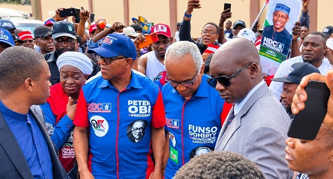

‘His Support Base Still Strong’, Doherty Says Obi Can Repeat 2023 Feat In Lagos

Funso Doherty, the Nigeria Democratic Congress (NDC) governorship candidate in Lagos, says Peter Obi retains the support needed to repeat his 2023 performance in the state. Speaking on Channels Television’s Politics Today on Thursday, Doherty rejected the suggestion that Obi’s move from the Labour Party to the NDC would weaken his appeal, arguing that voters are drawn to his political outlook rather than his party label.
Doherty said Obi’s reception remained strong and warned that politicians who dismissed his influence could misjudge the public mood. He pointed to the response of NDC supporters during an attack on the party’s town hall meeting as evidence that the enthusiasm seen during Obi’s 2023 campaign had not faded.
The meeting at Classic Event Place in Oregun, Ikeja, was disrupted before Obi and other party figures arrived. Suspected political thugs, reportedly carrying cutlasses, cudgels and stones, allegedly vandalised property and damaged vehicles at the venue. Supporters confronted the attackers, throwing chairs as they tried to drive them away, before security operatives intervened. The gathering later went ahead, with Obi, Victor Umeh and activist Aisha Yesufu among those attending. Doherty condemned the incident as unprovoked and unnecessary, and praised supporters who resisted it.
In the 2023 presidential election, Obi finished third nationally but won Lagos, receiving 582,454 votes against 572,606 for Bola Tinubu, the All Progressives Congress (APC) candidate. The APC has governed Lagos for 27 years, and Tinubu, a former state governor, has had substantial political influence there. Obi is seeking the presidency again in 2027, this time as the NDC candidate. Doherty said he believes the opposition can defeat the APC in Lagos, arguing that the party’s long-standing dominance is not insurmountable.
Source: Channels TV